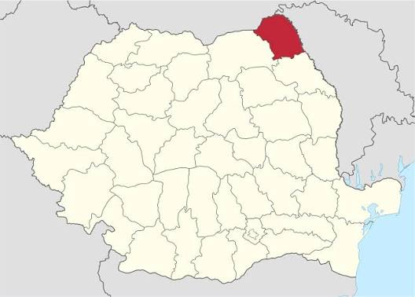

Prezentare Generală
Municipiul Botoșani este reședința și cel mai mare oraș al județului Botoșani, situat în nord-estul României. Așezat în partea de sud-vest a județului pe interfluviul dintre râurile Sitna și Dresleuca, orașul se remarcă prin diversitatea culturală marcată de marile personalități care s-au ridicat pe aceste meleaguri. Botoșaniul surprinde plăcut vizitatorii prin numeroasele spații verzi, arhitectura veche a clădirilor din centrul istoric și tradițiile sale locale.
Detalii Geografice și Administrative

Poziționarea județului Botoșani pe harta României
| Categorie | Tip | Detalii | |
|---|---|---|---|
| Locație | Țară | Geografie | România |
| Regiune | Administrativ | Moldova (Nord-Est) | |
| Coordonate | Geografie | 47°44′N 26°41′E | |
| Demografie | Populație | Statistici | ~90.010 locuitori (2021) |
| Suprafață | Statistici | 41,27 km² | |
| Altitudine | Statistici | 170 m | |
| Identitate | Reședință de județ | Statut | Județul Botoșani |